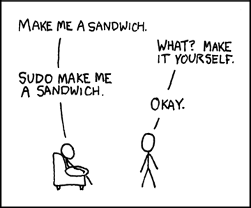

OS & GNU/Linux⚓︎
1. Systèmes d'exploitations :⚓︎
1.1. Définition et historique⚓︎
D'après la définition de Wikipedia
« En informatique, un système d'exploitation (souvent appelé OS — de l'anglais Operating System) est un ensemble de programmes qui dirige l'utilisation des ressources d'un ordinateur par des logiciels applicatifs.
Il reçoit des demandes d'utilisation des ressources de l'ordinateur — ressources de stockage des mémoires (par exemple des accès à la mémoire vive, aux disques durs), ressources de calcul du processeur central, ressources de communication vers des périphériques [...] ou via le réseau — de la part des logiciels applicatifs. Le système d'exploitation gère les demandes ainsi que les ressources nécessaires évitant les interférences entre les logiciels. »
Historique
Les années 1960 ont constitué un tournant pour les système d'exploitation. Au MIT (Massachusset Institute of Technology), le système d'exploitation CTTS (Compatible Time Sharing System) est publié en 1961. C'est l'un des tout premiers système d'exploitation à temps partagé, permettant à plusieurs utilisateurs d'utiliser un ordinateur en même temps. Cette apparente simultanéité dans l'exécution des programmes a permis de se diriger vers l'informatique moderne.
Le MIT s'associa aux laboratoires BELL et à General Electric pour créer Multics qui était un système innovant, héritant de CTTS. C'était l'un des premier système d'exploitation avec système de fichier hiérarchique, temps partagé, multitâche préemptif (c'est- à-dire la capacité d'arrêter ou d'exécuter une tâche planifiée en cours), multiutilisateur, avec une prise en compte de la sécurité. La première version sortit en 1965.
En 1969, les laboratoires BELL sortirent du projet et deux de leurs plus brillants informaticiens, Ken THOMPSON et Dennis RITCHIE qui avaient travaillé sur le projet Multics en conçurent une version simplifiée (ils considéraient Multics inutilement complexe) qu'ils nommèrent initialement UNICS (UNiplexed Information and Computing Service) puis UNIX. L'informatique moderne était née !
Au fil des années, des surcouches de plus en plus complexes sont ajoutées aux systèmes d'exploitations afin de gérer par exemple les entrées claviers, puis souris, et une interface graphique est ajoutée, simplifiant la tâche pour l'utilisateur.
Chaque ordinateur doit donc disposer d'un OS afin de pouvoir faire fonctionner les différents logiciels en parallèle. Historiquement, chaque fabriquant d'ordinateur a développé en partie son OS. On pourra, de manière non-exhaustive, citer :
- OS/360 par IBM, en 1968 ;
- DOS par Microsoft en 1981 ;
- Mac OS par Apple en 1984 ;
- Windows 3.X par Microsoft en 1990 ;
- GNU/Linux par la communauté en 1991 ;
- Android par Google en 2007 ;
- iOS par Apple en 2007.
1.2 GNU/Linux⚓︎
En 1985, Richard Stallman quitte le MIT pour écrire un système d'exploitation compatible Unix : GNU (Gnu is Not Unix). Opposé au principe du logiciel « propriétaire », il publie le manifeste GNU, où il expose ses idées de logiciel libre, permettant à chacun de s'approprier, de modifier et de diffuser le code source d'un logiciel.
Exercice 1
Se rendre sur Wikipédia et expliquer pourquoi il ne faut pas confondre les termes suivants:
- logiciel libre (free software, libre software ou libreware) ;
- gratuiciels (freewares) ;
- open source.
En 1991, Linus Torvalds, étudiant norvégien de 21 ans, indisposé par la faible disponibilité de serveur UNIX de l'université d'Helsinki décide d'écrire un mini OS dérivé d'Unix pour son PC. Il écrit un noyau auquel il adapte de nombreux composants disponibles du projet GNU. Réputé pour sa stabilité (mais aussi pour sa complexité d'installation), GNU/Linux appelé communément Linux est adopté par une grande communauté de bidouilleurs (hacker) sur l'internet, qui étendent régulièrement ses possibilités. Sans publicité, soutenu par la communauté du libre et de l'open-source, Linux se répand doucement et devient rapidement une alternative crédible à Windows, à tel point que 90 % des serveurs du cloud sont des serveurs Linux. Linus Torvalds continue à diriger le développement de Linux, et est considéré comme le « dictateur bienveillant à vie » (Benevolent Dictator for Life) de celui-ci.
Si, à l'origine, Linux a été développé pour les ordinateurs compatibles PC, il n'a jamais équipé qu'une très faible part des ordinateurs personnels. Mais le noyau Linux, accompagné ou non des logiciels GNU, est également utilisé par d'autres types de systèmes informatiques, notamment les serveurs, téléphones portables, systèmes embarqués ou encore superordinateurs. Le système d'exploitation pour téléphones portables Android qui utilise le noyau Linux (mais pas GNU) équipe aujourd'hui 85 % des tablettes tactiles et smartphones.
2. Où pratiquer ?⚓︎
Si vous utilisez déjà Linux ou un mac vous n'avez rien à installer. Sinon, pour faire vos premiers pas, selon les modalités à votre disposition, vous avez les solutions suivantes:
- Le site https://www.pythonanywhere.com permet de créer un compte gratuit pour programmer en python ou pour disposer d'un terminal sous Linux.
-
- Windows Subsystem for Linux (WSL) est une couche de compatibilité permettant d'exécuter des exécutables binaires Linux de manière native sur les dernières versions de Windows (à partir de windows 10). La version WSL 2,sortie en mai 2019, introduit la présence d'un véritable noyau Linux.
Installation sur WSL
- Pour installer la distribution Ubuntu, lancer l'invite de commande windows, puis :
wsl -install -d Ubuntu
-
Utilisation de WSL
- Une fois installé, vous avez accès à la distribution depuis l'invite de commande windows par l'intermédiaire de la commande
wsl. - Vous accédez alors à un terminal Linux tout ce qui est des plus classique
- Le prompt est de la forme
nom_utilisateur@nom_machine : chemin_dossier_courant $. - Normalement, votre répertoire courant est symbolisé par
~, ce qui est un raccourci pour symboliser le répertoire personnel de l'utilisateur.
- Une fois installé, vous avez accès à la distribution depuis l'invite de commande windows par l'intermédiaire de la commande
- Installation sur Raspberry Pi 4
- Il existe des distributions Linux spécifiques pour Rasberry 4, mais nous utiliserons Raspberry Pi OS (anciennement connu sous le nom de Raspbian), qui est une distribution basée sur Linux Debian spécialement optimisé pour Rasberry Pi.
- Une image est téléchargeable ici
- Une fois l'image installée sur une carte micro-SD, le mini-ordinateur devrait-être immédiatement fonctionnel.
Exercice
Suivez toutes les étapes d'installation de l'OS Raspebbry Pi OS, en créant un utilisateur administrateur avec votre nom de famille + première lettre de votre prénom, et un mot de passe simple.
- Le terminal
- Pour obtenir la ligne de commande dans Raspbian, il faut lancer le programme
Terminal. - Le prompt est de la forme
nom_utilisateur@nom_machine : chemin_dossier_courant $. - Normalement, votre répertoire courant est symbolisé par
~, ce qui est un raccourci pour symboliser le répertoire personnel de l'utilisateur.
- Pour obtenir la ligne de commande dans Raspbian, il faut lancer le programme
3. Le Shell Linux⚓︎
3.1. Bash⚓︎
Bash (acronyme de Bourne-Again shell) est un interpréteur en ligne de commande de type script. C’est le shell Unix(l'interpréteur de commande) du projet GNU.
Le terminal fonctionne avec le principe REPL : Read Eval Print Loop.
- Read: L’utilisateur tape une commande qui est lue par l’interpréteur,
- Eval: Cette commande est exécutée et retourne une chaîne de caractères,
- Print: La chaîne de caractères est affichée à l’écran,
- Loop: On recommence.
Comme tous les interpréteurs en ligne de commande de type script, Bash exécute quatre opérations fondamentales:
-
Il fournit une liste de commandes permettant d’opérer sur l’ordinateur (lancement de programmes, copie de fichiers, etc.) et il permet de regrouper ces commandes dans un fichier unique appelé script ;
-
Il vérifie la ligne de commande lors de son exécution ou lors d’une éventuelle procédure de vérification et renvoie un message d’erreur en cas d’erreur de syntaxe ;
-
En cas de validation, chaque ligne de commande est interprétée, c’est-à-dire traduite dans un langage compréhensible par le système d’exploitation qui l’exécute alors.
-
Les scripts sont de courts programmes généralement faciles à construire. Bash offre un service de gestion de flux, c’est-à-dire qu’il permet que le résultat d’un script (la sortie) soit transmis à un autre script (l’entrée). De cette façon, les scripts peuvent être « chaînés », chacun effectuant une seule tâche bien délimitée.
Les scripts peuvent être exécutés manuellement par l’utilisateur ou automatiquement par le système. Par exemple, dans la distribution GNU/Linux Ubuntu, le répertoire resume.d contient un certain nombre de scripts qui s’exécutent automatiquement lors du redémarrage du système, c’est-à-dire après la fin de la mise en veille de celui-ci. Ces scripts servent à relancer les différents programmes interrompus par la mise en veille.
3.2. Le système de fichiers⚓︎
Sur un système Linux, tout est un fichier, y compris un dossier. Mais pour rester compatible avec l'arborescence classique de windows, nous parlerons donc de :
- fichier lorsqu'il s'agit d'une feuille de l'arborescence ;
- dossier lorsqu'on parle d'un nœud ayant des enfants.
Pour naviguer dans l'arborescence, il est nécessaire de connaître deux commandes:
-
la commande
lspour List, qui permet de lister tous les enfants du répertoire courant dans l'arborescence et peut utiliser les options suivantes :ls -aaffiche les fichiers cachés;ls -Rafiche tous les fichiers dans les sous-répertoires(de manière récursive);ls -laffichera les détails des fichiers (autorisations, taille, propriétaires, etc...).
-
la commande
cdpour Change Directory, qui peut s'utiliser selon les manières suivantes :cd ~, ramène au répertoire de l'utilisateur courant;cd nom_du_repertoire_enfant, qui déplace le prompt dans le répertoire enfant sélectionné (adressage relatif);cd /chemin/absolu/vers/un répertoire, qui déplace vers le répertoire cible (adressage absolu);cd ..qui permet de remonter au répertoire parent.
Exercice 2
Se repérer dans l'arborescence:
- Remonter l'arborescence jusqu'à la racine. Donner le chemin absolu de votre répertoire personnel à partir de la racine.
- Se déplacer jusqu'au répertoire
/usr/binet lister les fichiers présents. - Retourner dans le dossier personnel, puis lister les fichiers présents, en affichant les détails. Quelles sont les informations données ? Quels sont les utilisateurs recensés du système ?
Les dossiers systèmes Linux
Dans un système de type UNIX , on dispose d'une arborescence de fichiers dont la racine est / , puis d'un certain nombres de répertoires dont voici les principaux éléments :
/
├── bin ← Commandes de base du système
├── dev ← Fichiers représentant les dispositifs matériels (devices) du système
├── etc ← Fichiers de configuration du système
├── home ← Répertoire d'accueil (HOME) des utilisateurs
├── lib ← Librairies
├── mnt ← Points de montage (clés usb etc.)
├── proc ← État du système et de ses processus
├── root ← Répertoire de l'administrateur système
├── run ← Variables d'état du système depuis le boot
├── sys ← Informations sur le noyau et les périphériques
├── usr ← Logiciels installés avec le système, base de données etc.
└── var ← Données fréquemment utilisées et modifiées
3.3. Les utilisateurs et les droits⚓︎
En Linux, tout fichier, et par extension dossier, appartient à un propriétaire ainsi qu'à un groupe et un utilisateur quelconque ne pourra pas forcément avoir tous les droits sur un fichier qui ne lui appartient pas.
Par exemple, étudions la sortie suivante donnée par la commande ls -l :
-rw-r--r-- 1 raoul staff 21359 2024-06-07 02:16 cours.md
drwx------@ 887 raoul staff 28384 6 jui 22:22 Downloads
-indique que l'élément trouvé est un fichier alors quedindique qu'il s'agit d'un dossier;- les 3×3=9 lettres suivantes indiquent les droits dont disposent les différents utilisateurs sur ce fichier;
@est pour nous sans intérêt (il indique que l'existence d'attributs étendus)- le nombre suivant est pour nous sans intérêt (il s'agit d'un compteur de liaison) ;
- le groupe de lettre suivant est le nom de l'utilisateur propriétaire du fichier ou dossier ;
- le groupe de lettre suivant est le nom du groupe propriétaire du fichier ou dossier ;
21359et28384représentent respectivement la taille en octet du fichier et celle du dossier ;- on trouve ensuite la date et l'heure de la dernière modification ;
- enfin le nom du fichier ou du dossier.
Les utilisateurs
Pour un fichier, on distinguera trois types d'utilisateurs :
upour user, c'est-à-dire le propriétaire du fichier ;gpour group, le groupe auquel appartient le fichier ;opour other, tous les autres utilisateurs.
Super-Utilisateur

Par défaut, il existe un super-utilisateur nommé root qui possède tous les droits sur un os Linux.
Pour modifier des attributs au niveau système, il faut prendre les droits de super-utilisateur, grâce à la commande sudo (super-user do). Cette commande demande systématiquement à l'utilisateur faisant partie du groupe des super-utilisateurs (sudoers) de confirmer avec son mot de passe (celui choisi à l'installation du système) toute action de modification effectuée au niveau du système.
Par exemple pour une mise à jour sous Ubuntu, on tapera les commandes suivantes :
- Mise à jour de la base de donnée des paquets systèmes :
Bash
sudo apt update - mise à jour des paquets :
BashAttention ! Avec de grands pouvoirs viennent de grandes responsabilités !
sudo apt upgrade
Les droits
Pour un fichier donné, on distinguera 4 permissions :
r: read, droit de lire le fichier ;w: write, droit de modifier le fichier ;x: execute, droit d'exécution du fichier ;-: aucun droit sur le fichier.
Exercice 3
Quels sont les droits des utilisateurs sur le dossier Téléchargements de mon PC ?
Attribution des permissions
Pour donner ou supprimer des permissions sur un fichier mon_texte.txt , on utilise la commande chmod de la manière suivante :
- Pour donner les droits en lecture et écriture à l'utilisateur:
Bash
chmod u+rw mon_texte.txt - Pour supprimer les droits en modification au groupe :
Bash
chmod g-w mon_texte.txt - Pour supprimer tous les droits aux autres utilisateurs :
Bash
chmod o-rwx mon_texte.txt
Il est aussi possible d'utiliser la notation octale pour gérer ces droits. Par exemple, avec la commande suivante :
chmod 640 mon_texte.txt
r = 4, w = 2, x = 1 , et que le premier chiffre correspond à l'utilisateur, le second au groupe, et le troisième aux autres.
Ainsi ici :
- l'utilisateur à les droits de lecture et d'écriture (4+2 = 6) ;
- le groupe à le droit de lecture (4) ;
- les autres n'ont aucun droit (0).
Une commande telle que chmod 777 mon_texte.txt done tous les droits de lecture, écriture et exécution à tous les utilisateurs du système.
Exercice 4
- Copiez un fichier quelconque depuis votre session Windows vers votre session WSL par l'intermédiaire de l'explorateur de fichier de windows.
- Quels sont les droits sur ce fichier ?
- Modifiez-les de manière à ce que seul l'utilisateur principal (vous) ait des droits de lecture, écriture et exécution sur ce fichier, et que les autres n'aient qu'un droit de lecture.
3.4. Les principales commandes Shell sous Linux⚓︎
Voici, de manière non-exhaustive, quelques-unes des commandes les plus utiles sous Linux :
Les principales commandes
(print working directory)
- Donne le chemin absolu du répertoire courant.
(manual)
- Donne le manuel de la commande passée en argument.
Exemple:
man pwdaffiche le manuel de la commandepwd
(concatenate)
- Son utilisation simple est d'afficher le contenu d'un fichier directement dans le terminal.
- Cependant cette commande permet bien d'autres choses :
cat > nv_fichier.txt: crée un nouveau fichier dans le répertoire courant, et le remplit avec les saisies de l'utilisateur (Ctrl+Cpour quitter) ;cat fichier1 fichier2 > fichier3: concatène les contenus des fichiers 1 et 2 dans un nouveau fichier.
Remarque:
- Pour créer un fichier vide on utilise plutôt la commande
touch.
(copy)
- Copie un fichier dans un dossier.
Exemple:
cp bidule.jpg /home/bob/photocopie le fichierbidule.jpgvers le répertoire/home/bob/photo, si les permissions sont correctement attribuées.
(move)
- Déplace un fichier vers un répertoire cible, et par extension permet de renommer un fichier.
Exemples:
mv bidule.jpg /home/bob/photodéplace le fichierbidule.jpgvers/home/bob/photo;mv bidule.jpg truc.jpgrenomme le fichierbidule.jpgentruc.jpg.
(make directory)
- Crée un nouveau répertoire dont le nom est passé en argument.
Exemple:
mkdir nv_dossier
(remove directory)
- Supprime un répertoire vide dont le nom est passé en argument.
Exemple:
rmdir nom_dossier
(remove)
- Supprime le ou les fichiers passés en arguments.
 Attention à cette commande qui peut tout casser
Attention à cette commande qui peut tout casser
Exemples:
rm mon_fichier: supprimemon_fichierrm *: supprime tous les fichiers du répertoire courant !rm -R: supprime de manière récursive tous les fichiers et sous-dossiers du répertoire courant !!!
- Permet de créer un nouveau fichier vide en lui passant le nom en argument. Ce n'est pas la peine d'utiliser la commande
catpour créer un fichier vide.
Exemple:
touch nv_fichier
- Permet de chercher des fichiers et/ou des dossiers dans un dossier donné.
Exemple:
find /home/ -name mon_texte.txt: cherche le fichiermon_texte.txtdans le répertoirehomeet tous ses sous-dossiers.
Permet de donner la localisation d'un fichier dans le système de fichier.
Remarques:
- Le résultat de la commande
locateest très rapide à obtenir, car elle utilise une base de donnée mise à jour régulièrement qui recense tous les fichiers du système. Cependant, la mise à jour de cette base de donnée n'est pas immédiate, donc les modifications récentes ne sont pas prises en compte. - Si l'on a les droits super-utilisateur on peut mettre à jour la base de données avec la commande
sudo updatedb.
(Global Regular Expression Print)
- Permet de chercher une chaîne de caractère dans un fichier. Ce qui est déjà utile mais cette commande permet aussi aux utilisateurs de spécifier des modèles à l'aide d'expressions régulières, puis de rechercher des lignes qui leur correspondent. Ce qui en fait un outil très puissant.
Syntaxe:
grep [options] modèle [fichier...]
Exemples:
grep "toto" bob.txtutilisation basique qui renverra toutes les lignes du fichierbob.txtcontenant la chaînetoto.grep "linux" /path/to/directory/*renverra toutes les lignes contenant la chaînelinuxdans les différents fichiers du répertoire indiqué.grep -i "important" /path/to/directory/*où l'option-ipermet de rendre la recherche insensible à la casse.grep -c "pattern" /path/to/directory/*où l'option-cpermet de compter le nombre d'occurences.grep -r "pattern" /path/to/directory/où l'option-rpermet de chercher de façon récursive dans les sous-dossiers.
Remarque: grep est très efficace sur les fichiers comptenant du texte, mais ne fonctionne pas correctement sur les fichiers pdf, odt ...
- Renvoie les 10 premières lignes d'un fichier.
- On peut paramétrer le nombre de lignes obtenues avec l'option
-n
Exemple:
head -n 5 bob.txtenvoie les 5 premières lignes du fichierbob.txt.
Fonctionne de la même manière que head , mais en renvoyant les 10 dernières lignes.
Compare deux fichiers ligne par ligne et renvoie toutes celles présentant une différence. Pratique!
Exercice 5
- Télécharger le fichier Arborescence.tar.gz
- Créer un dossier
TPdans le dossier personnel - Copier le fichier précédent dans ce dossier, puis le décompresser avec la commande
BashAttention, la décompression peut durer plusieurs minutes.
tar -xzf Arborescence.tar.gz - Vous aurez besoin de la commande
locatequi n'est pas installée. Exécutez la commande suivante pour installer le paquet nécessaire à son utilisation :Bashsudo apt install plocate - Pour débuter, chercher le fichier
commencement.txtdans l'arborescence, et le lire ! Bon courage, vous aurez probablement à chercher en parallèle sur des commandes spécifiques avec les options qui vont bien pour parvenir à la fin de ce TP ! (Petit point de détail, si une commande vous semble trop longue, vous pouvez l'interrompre avec le raccourci clavierCtrl+C).